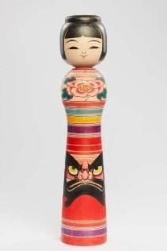

Tsugaru Chūgata Kokeshi là phiên bản Kokeshi cỡ trung thuộc dòng Tsugaru-kei, một trong 12 dòng Kokeshi truyền thống của Nhật Bản. Dòng búp bê này được chế tác chủ yếu tại Nuruyu Onsen và Owani Onsen, tỉnh Aomori, nơi nổi tiếng với kỹ thuật tiện gỗ và nghệ thuật sơn vẽ tinh xảo.
Tác phẩm vẫn giữ những đặc trưng của Tsugaru Kokeshi như thân gỗ được chế tác từ một khối gỗ nguyên bằng kỹ thuật tsukuri tsuke, mái tóc ngắn, thân cân đối và các dải màu nhiều sắc. Điểm nổi bật của mẫu búp bê này là sự kết hợp giữa hoa mẫu đơn – biểu tượng của phú quý và hạnh phúc – với hình ảnh Daruma, vị búp bê cầu may nổi tiếng của Nhật Bản, tượng trưng cho ý chí, sự kiên trì và thành công. Các họa tiết đều được vẽ thủ công, phản ánh kỹ thuật chế tác tinh xảo của các nghệ nhân Tsugaru.
Trong văn hóa Nhật Bản, Tsugaru Kokeshi không chỉ là món quà lưu niệm mà còn là biểu tượng của sức khỏe, may mắn và hạnh phúc. Riêng tác phẩm này, sự xuất hiện của Daruma càng làm nổi bật thông điệp về nghị lực vượt qua khó khăn, theo đuổi mục tiêu và đạt được thành công. Đây là sự kết hợp hài hòa giữa nghệ thuật Kokeshi truyền thống và những biểu tượng văn hóa đặc trưng của Nhật Bản, góp phần làm phong phú thêm giá trị của dòng Tsugaru Kokeshi.
津軽系中型こけしは、日本の伝統こけし12系統のひとつである津軽系の中型作品です。津軽系こけしは主に青森県の温湯（ぬるゆ）温泉や大鰐（おおわに）温泉で作られており、この地域は精巧な木地挽きと絵付けの技で知られています。
本作は、一本の木から作る「作り付け」の技法、短い髪、均整のとれた胴、多色のろくろ線といった津軽系こけしの特徴を受け継いでいます。最大の見どころは、富貴と幸福の象徴である牡丹と、意志・忍耐・成功を表す日本の有名な縁起物「だるま」の組み合わせです。文様はすべて手描きで、津軽の職人の精巧な技が表れています。
日本文化において、津軽系こけしは単なるお土産ではなく、健康・幸運・幸福の象徴でもあります。本作ではだるまが描かれていることで、困難を乗り越え、目標を追い続け、成功をつかむというメッセージがいっそう際立っています。伝統こけしと日本を代表する文化的シンボルが調和した、津軽系こけしの魅力をさらに広げる一体です。